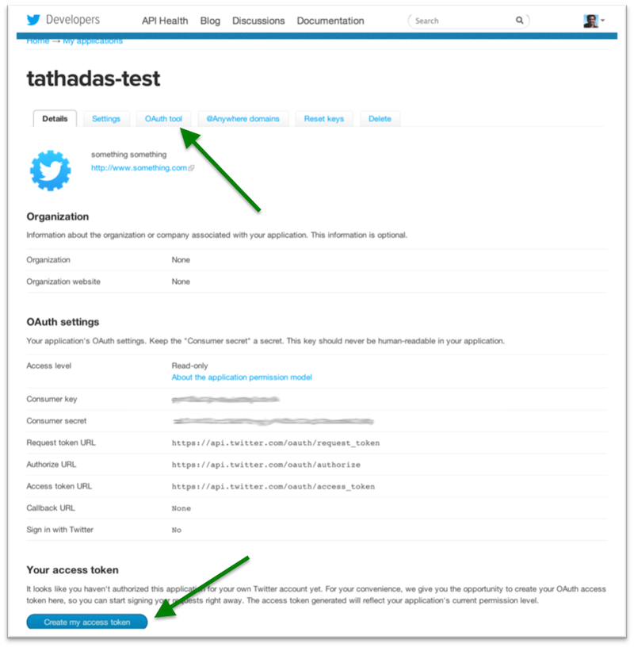

In this chapter, we will walk you through using Spark Streaming to process live data streams. Remember, Spark Streaming is a component of Spark that provides highly scalable, fault-tolerant streaming processing. These exercises are designed as standalone Scala programs which will receive and process Twitter’s real sample tweet streams. For the exercises in this section, you can choose to use Scala or Java. If you would like to use Scala but are not familiar with the language, we recommend that you see the Introduction to the Scala Shell section to learn some basics.
Setup
This section will first introduce you to the basic system setup of the standalone Spark Streaming programs, and then guide you through the steps necessary to create Twitter authentication tokens necessary for processing Twitter’s real time sample stream.
System Setup
We use a modified version of the Scala standalone project template introduced in the Running Standalone Spark Programs section for the next exercise. In your AMI, this has been setup in /root/streaming/. You should find the following items in the directory.
twitter.txt:File containing Twitter authentication details- For Scala users
scala/sbt:Directory containing the SBT toolscala/build.sbt:SBT project filescala/Tutorial.scala:Main Scala program that you are going to edit, compile and runscala/TutorialHelper.scala:Scala file containing few helper functions forTutorial.scala
- For Java users
java/sbt:Directory containing the SBT tooljava/build.sbt:SBT project filejava/Tutorial.javaMain Java program that you are going to edit, compile and runjava/TutorialHeler.java:Java file containing a few helper functionsjava/ScalaHelper.java:Scala file containing a few helper functions
The main file you are going to edit, compile and run for the exercises is Tutorial.scala or Tutorial.java. It should look as follows:
import spark._
import spark.streaming._
import StreamingContext._
import TutorialHelper._
object Tutorial {
def main(args: Array[String]) {
// Location of the Spark directory
val sparkHome = "/root/spark"
// URL of the Spark cluster
val sparkUrl = getSparkUrl()
// Location of the required JAR files
val jarFile = "target/scala-2.9.3/tutorial_2.9.3-0.1-SNAPSHOT.jar"
// HDFS directory for checkpointing
val checkpointDir = TutorialHelper.getHdfsUrl() + "/checkpoint/"
// Configure Twitter credentials using twitter.txt
TutorialHelper.configureTwitterCredentials()
// Your code goes here
}
}
import spark.api.java.*;
import spark.api.java.function.*;
import spark.streaming.*;
import spark.streaming.api.java.*;
import twitter4j.*;
import java.util.Arrays;
import scala.Tuple2;
public class Tutorial {
public static void main(String[] args) throws Exception {
// Location of the Spark directory
String sparkHome = "/root/spark";
// URL of the Spark cluster
String sparkUrl = TutorialHelper.getSparkUrl();
// Location of the required JAR files
String jarFile = "target/scala-2.9.3/tutorial_2.9.3-0.1-SNAPSHOT.jar";
// HDFS directory for checkpointing
String checkpointDir = TutorialHelper.getHdfsUrl() + "/checkpoint/";
// Twitter credentials from login.txt
TutorialHelper.configureTwitterCredentials()
// Your code goes here
}
}
For your convenience, we have added a couple of helper function to get the parameters that the exercises need.
getSparkUrl()is a helper function that fetches the Spark cluster URL from the file/root/spark-ec2/cluster-url.configureTwitterCredential()is another helper function that configures Twitter’s authentication detail using the file/root/streaming/twitter.txt. This is explained further in the next section.
Twitter Credential Setup
Since all of the exercises are based on Twitter’s sample tweet stream, it is necessary to configure OAuth authentication with a Twitter account. To do this, you will need to setup a consumer key+secret pair and an access token+secret pair using a Twitter account. Please follow the instructions below to setup these temporary access keys with your Twitter account. These instructions will not require you to provide your Twitter username/password. You will only be required to provide the consumer key and access token pairs that you will generate, which you can easily destroy once you have finished the tutorial. So, your Twitter account will not be compromised in any way.
-
Open this link. This page lists the set of Twitter-based applications that you own and have already created consumer keys and access tokens for. This list will be empty if you have never created any applications. For this tutorial, create a new temporary application. To do this, click on the blue “Create a new application” button. The new application page should look the page shown below. Provide the required fields. The Name of the application must be globally unique, so using your Twitter username as a prefix to the name should ensure that. For example, set it as [your-twitter-handle]-test. For the Description , anything is fine. For the Website , similarly, any website is fine, but ensure that it is a fully-formed URL with the prefix http:// . Then, click on the “Yes, I agree” checkbox below the Developer Rules of the Road . Finally, fill in the CAPTCHA and click on the blue “Create your Twitter application” button.

-
Once you have created the application, you will be presented with a confirmation page similar to the one shown below. You should be able to see the consumer key and the consumer secret that have been generated. To generate the access token and the access token secret, click on the blue “Create my access token” button at the bottom of the page (lower green arrow in the figure below). Note that there will be a small green confirmation at the top of the page saying that the token has been generated.

-
To get all of the keys and secrets required for authentication, click on the OAuth Tool tab in the top menu on the page (upper green arrow in the previous figure). You will be presented with a page similar to the one shown below:

-
Finally, update the twitter configuration file using your favorite text editor:
cd /root/streaming/ vim twitter.txtYou should see the follow template of = separated key-value pairs already setup.
consumerKey = consumerSecret = accessToken = accessTokenSecret =Please copy the values from the previous webpage into this appropriate keys in this file. After copying, it should look something like the following:
consumerKey = z25xt02zcaadf12 ... consumerSecret = gqc9uAkjla13 ... accessToken = 8mitfTqDrgAzasd ... accessTokenSecret = 479920148 ...Please double-check that the right values have been assigned to the right keys. Save the file and proceed to writing your first Spark Streaming program.
-
Once you have finished this tutorial (not now!), you can go back to the starting page and delete the application you have created. To do this click on the application, and then click on Delete as shown by the arrow below. This will automatically invalidate the tokens.

First Spark Streaming program
Let’s try to write a very simple Spark Streaming program that prints a sample of the tweets it receives from Twitter every second. First locate the
Tutorial class and open it with a text editor.
cd /root/streaming/scala/ vim Tutorial.scala
cd /root/streaming/java/ vim Tutorial.java
The cluster machines have both vim and emacs installed for editing. Alternatively, you can use your favorite text editor locally and then copy-paste content using vim or emacs before running it.
To express any Spark Streaming computation, a StreamingContext object needs to be created. This object serves as the main entry point for all Spark Streaming functionality.
val ssc = new StreamingContext(sparkUrl, "Tutorial", Seconds(1), sparkHome, Seq(jarFile))
JavaStreamingContext ssc = new JavaStreamingContext(
sparkUrl, "Tutorial", new Duration(1000), sparkHome, new String[]{jarFile});
Here, we create a StreamingContext object by providing the Spark cluster URL, the batch duration we’d like to use for streams, the Spark home directory, and the list of JAR files that are necessary to run the program. “Tutorial” is a unique name given to this application to identify it the Spark’s web UI. We elect for a batch duration of 1 second. Next, we use this context to create a stream of tweets:
val tweets = ssc.twitterStream()
JavaDStream<Status> tweets = ssc.twitterStream();
The object tweets is a DStream of tweet statuses. More specifically, it is continuous stream of RDDs containing objects of type twitter4j.Status. As a very simple processing step, let’s try to print the status text of the some of the tweets.
val statuses = tweets.map(status => status.getText())
statuses.print()
JavaDStream<String> statuses = tweets.map(
new Function<Status, String>() {
public String call(Status status) { return status.getText(); }
}
);
statuses.print();
Similar to RDD transformation in the earlier Spark exercises, the map
operation on tweets maps each Status object to its text to create a new
‘transformed’ DStream named statuses. The print output operation tells the
context to print first 10 records in each RDD in a DStream, which in this case
are 1 second batches of received status texts.
We also need to set an HDFS for periodic checkpointing of the intermediate data.
ssc.checkpoint(checkpointDir)
ssc.checkpoint(checkpointDir);
Finally, we need to tell the context to start running the computation we have setup.
ssc.start()
ssc.start();
Note that all DStream operations must be done before calling this statement.
After saving Tutorial.scala, it can be run from the command prompt using the following command (from within the /root/streaming/[language] directory).
sbt/sbt package runThis command will automatically compile the Tutorial class and create a JAR file in /root/streaming/[language]/target/scala-2.9.2/. Finally, it will run the program. You should see output similar to the following on your screen:
------------------------------------------- Time: 1359886325000 ms ------------------------------------------- RT @__PiscesBabyyy: You Dont Wanna Hurt Me But Your Constantly Doing It @Shu_Inukai ????????????????????????????????????????? @Condormoda Us vaig descobrir a la @080_bcn_fashion. Molt bona desfilada. Salutacions des de #Manresa RT @dragon_itou: ?RT???????3000???????????????????????????????????10??????? ?????????????????2?3???9???? #???? http://t.co/PwyA5dsI ? h ... Sini aku antar ke RSJ ya "@NiieSiiRenii: Memang (?? ?`? )"@RiskiMaris: Stresss"@NiieSiiRenii: Sukasuka aku donk:p"@RiskiMaris: Makanya jgn" @brennn_star lol I would love to come back, you seem pretty cool! I just dont know if I could ever do graveyard again :( It KILLs me ????????????????????????????????????????????????????????????????????????????????????????ww ?????????? When the first boats left the rock with the artificers employed on. @tgs_nth ???????????????????????????? ... ------------------------------------------- Time: 1359886326000 ms ------------------------------------------- ??????????? ??????????? @amatuki007 ???????????????????????????????? ????????????????? RT @BrunoMars: Wooh! Lo malo es qe no tiene toallitas Sayang beb RT @enjaaangg Piye ya perasaanmu nyg aku :o Baz? ?eyler yar??ma ya da reklam konusu olmamal? d???ncesini yenemiyorum. ?????????????MTV???????the HIATUS?? @anisyifaa haha. Cukupla merepek sikit2 :3 @RemyBot ????????? ...
To stop the application, use Ctrl + c .
FAQ: If you see the following message, it means that the authentication with Twitter failed.
13/02/04 23:41:57 INFO streaming.NetworkInputTracker: De-registered receiver for network stream 0 with message 401:Authentication credentials (https://dev.twitter.com/pages/auth) were missing or incorrect. Ensure that you have set valid consumer key/secret, access token/secret, and the system clock is in sync.
<html>
<head>
<meta http-equiv="Content-Type" content="text/html; charset=utf-8"/>
<title>Error 401 Unauthorized</title>
</head>
<body>
<h2>HTTP ERROR: 401</h2>
<p>Problem accessing '/1.1/statuses/sample.json?stall_warnings=true'. Reason:
<pre> Unauthorized</pre>
</body>
</html>
Relevant discussions can be found on the Internet at:
http://www.google.co.jp/search?q=d0031b0b or
http://www.google.co.jp/search?q=1db75513
TwitterException{exceptionCode=[d0031b0b-1db75513], statusCode=401, message=null, code=-1, retryAfter=-1, rateLimitStatus=null, version=3.0.3}
Answer: Please verify whether the Twitter consumer key+secret and access token+secret has been set correctly in the file twitter.txt as instructed earlier.
Further exercises
Next, let’s try something more interesting, say, try printing the 10 most popular hashtags in the last 5 minutes. These next steps explain the set of the DStream operations required to achieve our goal. As mentioned before, the operations explained in the next steps must be added in the program before ssc.start(). After every step, you can see the contents of new DStream you created by using the print() operation and running Tutorial in the same way as explained earlier (that is, sbt/sbt package run).
-
Get the stream of hashtags from the stream of tweets: To get the hashtags from the status string, we need to identify only those words in the message that start with “#”. This can be done as follows:
val words = statuses.flatMap(status => status.split(" ")) val hashtags = words.filter(word => word.startsWith("#"))JavaDStream<String> words = statuses.flatMap( new FlatMapFunction<String, String>() { public Iterable<String> call(String in) { return Arrays.asList(in.split(" ")); } } ); JavaDStream<String> hashTags = words.filter( new Function<String, Boolean>() { public Boolean call(String word) { return word.startsWith("#"); } } );The
flatMapoperation applies a one-to-many operation to each record in a DStream and then flattens the records to create a new DStream. In this case, each status string is split by space to produce a DStream where each record is a word. Then we apply thefilterfunction to retain only the hashtags. The resultinghashtagsDStream is a stream of RDDs having only the hashtags. If you want to see the result, addhashtags.print()and try running the program. You should see something like this (assuming no other DStream hasprinton it):------------------------------------------- Time: 1359886521000 ms ------------------------------------------- #njnbg #njpw #????? #algeria #Annaba
-
Count the hashtags over a 5 minute window: Next, we’d like to count these hashtags over a 5 minute moving window. A simple way to do this would be to gather together the last 5 minutes of data and process it in the usual map-reduce way — map each tag to a (tag, 1) key-value pair and then reduce by adding the counts. However, in this case, counting over a sliding window can be done more intelligently. As the window moves, the counts of the new data can be added to the previous window’s counts, and the counts of the old data that falls out of the window can be ‘subtracted’ from the previous window’s counts. This can be done using DStreams as follows:
val counts = hashtags.map(tag => (tag, 1)) .reduceByKeyAndWindow(_ + _, _ - _, Seconds(60 * 5), Seconds(1))The
_ + _and_ - _are Scala shorthands for specifying functions to add and subtract two numbers.Seconds(60 * 5)specifies the window size andSeconds(1)specifies the movement of the window.JavaPairDStream<String, Integer> tuples = hashTags.map( new PairFunction<String, String, Integer>() { public Tuple2<String, Integer> call(String in) { return new Tuple2<String, Integer>(in, 1); } } ); JavaPairDStream<String, Integer> counts = tuples.reduceByKeyAndWindow( new Function2<Integer, Integer, Integer>() { public Integer call(Integer i1, Integer i2) { return i1 + i2; } }, new Function2<Integer, Integer, Integer>() { public Integer call(Integer i1, Integer i2) { return i1 - i2; } }, new Duration(60 * 5 * 1000), new Duration(1 * 1000) );There are two functions that are being defined for adding and subtracting the counts.
new Duration(60 * 5 * 1000)specifies the window size andnew Duration(1 * 1000)specifies the movement of the window.Note that only ‘invertible’ reduce operations that have ‘inverse’ functions (like how subtraction is the inverse of addition) can be optimized in this manner. The generated
countsDStream will have records that are (hashtag, count) tuples. If youprintcounts and run this program, you should see something like this:------------------------------------------- Time: 1359886694000 ms ------------------------------------------- (#epic,1) (#WOWSetanYangTerbaik,1) (#recharged,1) (#??????????,1) (#jaco,1) (#Blondie,1) (#TOKIO,1) (#fili,1) (#jackiechanisamazing,1) (#DASH,1) ...
-
Find the top 10 hashtags based on their counts: Finally, these counts have to be used to find the popular hashtags. A simple (but not the most efficient) way to do this is to sort the hashtags based on their counts and take the top 10 records. Since this requires sorting by the counts, the count (i.e., the second item in the (hashtag, count) tuple) needs to be made the key. Hence, we need to first use a
mapto flip the tuple and then sort the hashtags. Finally, we need to get the top 10 hashtags and print them. All this can be done as follows:val sortedCounts = counts.map { case(tag, count) => (count, tag) } .transform(rdd => rdd.sortByKey(false)) sortedCounts.foreach(rdd => println("\nTop 10 hashtags:\n" + rdd.take(10).mkString("\n")))JavaPairDStream<Integer, String> swappedCounts = counts.map( new PairFunction<Tuple2<String, Integer>, Integer, String>() { public Tuple2<Integer, String> call(Tuple2<String, Integer> in) { return in.swap(); } } ); JavaPairDStream<Integer, String> sortedCounts = swappedCounts.transform( new Function<JavaPairRDD<Integer, String>, JavaPairRDD<Integer, String>>() { public JavaPairRDD<Integer, String> call(JavaPairRDD<Integer, String> in) throws Exception { return in.sortByKey(false); } }); sortedCounts.foreach( new Function<JavaPairRDD<Integer, String>, Void> () { public Void call(JavaPairRDD<Integer, String> rdd) { String out = "\nTop 10 hashtags:\n"; for (Tuple2<Integer, String> t: rdd.take(10)) { out = out + t.toString() + "\n"; } System.out.println(out); return null; } } );The
transformoperation allows any arbitrary RDD-to-RDD operation to be applied to each RDD of a DStream to generate a new DStream. The resulting ‘sortedCounts’ DStream is a stream of RDDs having sorted hashtags. Theforeachoperation applies a given function on each RDD in a DStream, that is, on each batch of data. In this case,foreachis used to get the first 10 hashtags from each RDD insortedCountsand print them, every second. If you run this program, you should see something like this:Top 10 hashtags: (2,#buzzer) (1,#LawsonComp) (1,#wizkidleftEMEcos) (1,#???????) (1,#NEVERSHUTMEUP) (1,#reseteo.) (1,#casisomoslamismapersona) (1,#job) (1,#????_??_?????_??????) (1,#?????RT(*^^*))
Note that there are more efficient ways to get the top 10 hashtags. For example, instead of sorting the entire of 5-minute-counts (thereby, incurring the cost of a data shuffle), one can get the top 10 hashtags in each partition, collect them together at the driver and then find the top 10 hashtags among them. We leave this as an exercise for the reader to try.
-
API Reference: You can explore the full streaming API by referencing the Java/Scala API docs.